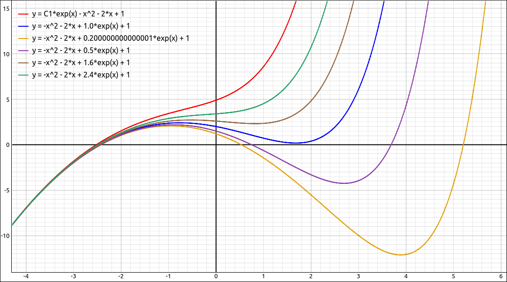
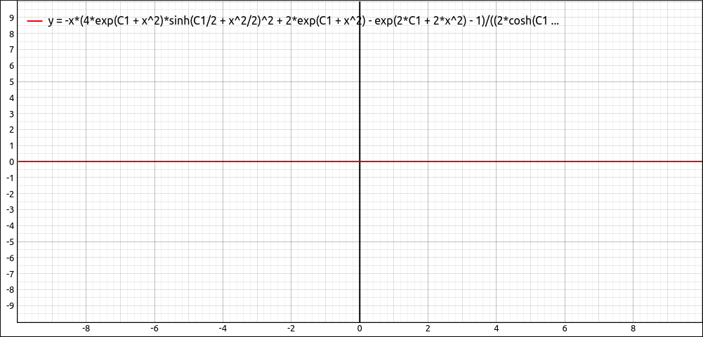

Differential Equations#
Discussion & Definitions#
Differential Equations and Verifying Solutions#
A differential equation is simply an equation that has derivatives in it, for example, \(xy' = \sin(x)+y\) or \(y'' -3y'= x^3y-7x+3\). Solving a differential equation means finding a function \(y = f(x)\) so that when the function is substituted into the equation we have both sides equal to each other.
For example, say we have the following differential equation,
One solution to this equation is \(f(x) = e^{x} - x^{2} - 2 x + 1\), to verify this we simply put the function into the equation, take the derivatives and simplify to see if we get a true statement, and here we do.
Along the same lines we can also verify if a function is not a solution by the same method. For example \(x^{2}\) is not a solution since,
There are many ways to solve a differential equation, some methods with produce an exact solution and others a numerical or graphical solution. A detailed discussion of solving methods is best for a course in differential equations but we will look at some of them here.
The order of a differential equation is the highest order of any of the derivatives in the equation. For example, \(xy' = \sin(x)+y\) has order 1 and \(y'' -3y'= x^3y-7x+3\) has order 2. Usually, in an integral Calculus class we study first order equations.
General and Particular Solutions#
In our above differential equation
we looked at the solution \(f(x) = e^{x} - x^{2} - 2 x + 1\). Another solution to this equation is \(f(x) = 7e^{x} - x^{2} - 2 x + 1\), and another is \(f(x) = -4e^{x} - x^{2} - 2 x + 1\). In general, any function of the form \(f(x) = c e^{x} - x^{2} - 2 x + 1\), where \(c\) is any real number is a solution to this differential equation. This is called the general solution to the differential equation and represents an entire family fol solutions.

Family of Solutions to the Differential Equation#
The solution \(f(x) = e^{x} - x^{2} - 2 x + 1\) is one particular member of that family and is called a particular solution to the differential equation. In some cases, such as with initial-value problems below, if we have a little more information (such as a particular point on the graph) we can find a particular solution from the general solution.
Initial-Value Problems#
Usually a given differential equation has an infinite number of solutions. If we have some more information about a particular curve or the physical situation we can find a particular solution that satisfies the conditions. In many cases this is a point on the curve \((a, b)\) which tells us that \(f(a) = b\) and would give us an equation that we might be able to solve for the general constants in the general solution. This point or the equation \(f(a) = b\) is called an initial value. A differential equation together with one or more initial values is called an initial-value problem. The general rule is that the number of initial values needed for an initial-value problem is equal to the order of the differential equation. For example, \(xy' = \sin(x)+y\) would require one initial value and \(y'' -3y'= x^3y-7x+3\) would require two.
For example, solve the initial value problem \(y' = 3e^x+x^2-4\) with the initial value \(y(0) = 5\), that is the point \((0, 5)\) is on the curve.
This is a fairly nice differential equation since we can take the integral of both sides,
Now using our initial value information that \(y(0) = 5\),
So \(C = 2\) and our particular solution is \(y = 3e^x+\frac{x^3}{3}-4x + 2\).
Example: Verifying a Solution to a Differential Equation#
In this example we will verify that \(f(x) = e^{x} - x^{2} - 2 x + 1\) and the general solution \(f(x) = ce^{x} - x^{2} - 2 x + 1\) are solutions to the differential equation,
GeoGebra#
Input the solution function,
e^x - x^2 - 2 x + 1
Assuming this came in as f(x) we can input the derivative portion into a new cell,
f'-f
you may need to simplify this with,
Simplify(g)
but the result should be the right hand side of our equation.
We can do the same process with
c e^x - x^2 - 2 x + 1
the only difference is that c will be replaced with a slider. The rest of the steps are the same and you can move the slider around to see that the final simplification remains the same.
CLAE#
Input the solution function,
E^x - x^2 - 2*x + 1
Assume this came in as R1. Now input the differential equation, as with all equations in CLAE we need to make this an equation equal to 0. So the equation we want is,
In CLAE (really SymPy) y is considered a variable so we need to use the notation of f(x) (or g(x), h(x), g(t), etc) for it to realize that we are dealing with an unknown function. Also, CLAE does not recognize the prime notation since it was built to also handle multivariable expressions and partial derivatives. So the derivative notation is a little lengthy. The notation f(x).diff(x) would represent \(f'(x)\). Similarly, we can do higher order derivatives, f(x).diff(x, 2) would represent \(f''(x)\), f(x).diff(x, 3) would represent \(f'''(x)\), f(x).diff(x, 7) would represent \(f^{(7)}(x)\), and so on. So our differential equation would be,
-x^2 - f(x) + f(x).diff(x) +3
Assume this came in as R2. To verify the solution select R2, then select Algebra > Evaluate, for the variable input f(x) and for the expression input R1, the result will be,
Now select Algebra > Simplify to simplify the above expression and the result is 0, verifying the solution.
To verify the general solution input the expression,
c*E^x - x^2 - 2*x + 1
Assume this came in as R5. To verify the solution select R2 (the differential equation), then select Algebra > Evaluate, for the variable input f(x) and for the expression input R5, the result will be,
Now select Algebra > Simplify to simplify the above expression and the result is 0, verifying the solution.
Note
Sometimes when using the simplify option to verify a differential equation the simplify might not return 0 immediately. In some cases you need to simplify twice. If you do simplify several times then it is possible that the simplify is not seeing a relationship it cn exploit or the intended solution is not a solution. In these cases you can sometimes take a graphical approach and graph the simplified result, if the graph is the x-axis then you probably do have a viable solution.
There is also an ODE solution checker in CLAE that s a little more powerful and easier to use for checking solutions to differential equations. This option is discussed in the solving ODE section below and the user’s guide for CLAE.
Maxima#
Input the solution function,
kill(all);
f(x):=%e^x - x^2 - 2*x + 1
diff(f(x),x)-f(x);
The result should be the right hand side. The same will work for the general solution,
f(x):=c*%e^x - x^2 - 2*x + 1
Note that we could also define the differential equation as a function,
de(fct):=diff(fct,x)-fct;
Then to verify the solution we could simply input,
de(f(x));
Example: Initial-Value Problem#
We will solve the initial-value problem we looked at above. Solve the initial value problem \(y' = 3e^x+x^2-4\) with the initial value \(y(0) = 5\), that is the point \((0, 5)\) is on the curve.
GeoGebra#
Input the right hand side of the differential equation,
3e^x+x^2-4
Assume this came in as f(x). We could integrate this but GeoGebra would not return the integral with the constant of integration c, it makes c a slider, so we cannot solve for c. On the other hand, GeoGebra has functions for solving differential equations of the form \(y' = f(x, y)\), which this one is.
In a new cell input,
SolveODE(f, (0, 5))
This will solve the differential equation \(y' = 3e^x+x^2-4\) and find the particular solution that passes through the point \((0, 5)\). In other words, our initial value problem. The result is,
CLAE#
Input the right hand side of the differential equation,
3*E^x+x^2-4
Assume this came in as R1. Now select Calculus > Indefinite Integral, variable x, and include the constant. The result is,
With this selected we evaluate it at \(x = 0\). Select Algebra > Evaluate, variable x and expression 0. The result is, \(C_{1} + 3\).
We hardly need the CAS to solve this equal to 5 but just for practice when we get something more difficult. Assume the last expression came in as R4, input R4 - 5 and then do Algebra > Solve on the result, variable now is C1, this returns our expected 2.
Maxima#
Input the right hand side of the differential equation,
kill(all);
f(x):=3*%e^x+x^2-4
Integrate with,
intf:integrate(f(x),x);
This will return the indefinite integral without a constant, to add the constant and turn this into a function do the following,
intfc(x):=''(intf+c);
Now solve the initial value problem with,
solve(intfc(0)=5,c);
Which gives the result of \(c = 2\).
Example: Solving Differential Equations#
As noted above, the techniques involved in finding solutions to differential equations are best left to a course in differential equations. Below are some examples in using our technologies to solve differential equations. Not every differential equation is solvable exactly, just like not every integral has an elementary solution. We will concentrate here on exact solutions to differential equations. Some numeric and graphical solutions will be discussed in the subsequent sections.
GeoGebra#
GeoGebra has functions for solving differential equations and initial-value problems of the form \(y' = f(x, y)\). Higher-order differential equations and those involving more difficult expressions need other computer algebra systems. The function for these is SolveODE, which comes in several forms.
SolveODE(f(x, y))solves a differential equation exactly and returns the general solution with constants implemented as sliders.SolveODE(f(x, y), (a, b))solves the initial-value problem \(y' = f(x, y)\) and \(y(a) = b\). Note that the point \((a, b)\) can be a geometric point that is on the plot.
For example, let’s solve the differential equation, \(y' = 2 x y \left(2 y + 1\right)\). Input the right hand side,
2 x y (2 y + 1)
Assuming this came in as a(x, y) in a new cell input
SolveODE(a)
and it returns the result along with a slider for the constant. If we check this by, assuming that the solution equation is g,
g' - a(x,g)
we see that the expression is not 0 as expected but if we look over to the graph the plot is the x-axis, telling us that the solution does check but the expression did not simplify to 0. If we further did the command Simplify(h) (assuming the last expression was h) it does return 0.
CLAE#
Input the differential equation,
2*x*f(x)*(2*f(x) + 1) - f(x).diff(x)
Then select this and then select Calculus > Solve ODE, the function should automatically load as f(x), if not input it, then hit OK. The result is,
Note that it returns the result as an equation. If we assume that the differential equation came in as R1 and the above solution was R2, to check the solution, select R1 and in the expression input of the checking dialog box input R2 the result is, \(\left( \text{True}, \ 0\right)\). The first entry is true or false, true meaning that the solution checks and if it were false that would have meant that the solution did not check. The second entry in the tuple is the result of the expression after the function has been substituted into the differential equation and simplified.
We could have also just input the expression on the right hand side of the solution equation. If we select the solution equation then select Algebra > Equations > Right Hand Side it will extract the right hand side expression, assume it came in as R4. If we select the differential equation and then Calculus > Check ODE Solution, and then input R4 into the expression input we get the same result.
You do not need to use a CAS result in this option, you can also simply input the expression. For example, if we gave the same differential equation to GeoGebra the result would be,
If we wished to check this solution we could select the differential equation and then select Calculus > Check ODE Solution, and then input exp(x^2)/(C1 - 2*exp(x^2)), we get the same result \(\left( \text{True}, \ 0\right)\).
Note
Several notes about the ODE solution checker.
First, it may return false even if the solution is a solution to the ODE, it depends if the simplification is powerful enough to return exactly 0 for the check. In these cases you can also check the solution graphically. Extract the second expression using options from the Edit manu, and graph it, if it is equivalently 0, that is, graphs as the x-axis then the expression should have reduced to 0 and returned true.
We could have checked the solution using the evaluation option from the Algebra menu. Select the differential equation, then select
Algebra > Evaluate, input the functionf(x)and the expression for the solution. Note here we cannot use the equation. We can still use CAS results. Then selectAlgebra > Simplifyto simplify the expression. You may need to simplify the expression several times. If the result is 0 then the solution checks. As with the checker it is possible that the solution is valid but the simplification does not return 0 bt an expression that is equivalently 0. The above example is a good example of this. If we use the evaluation if the Algebra menu for this equation and solution we get,
which simplifies to
and then
if we graph this we get,

Graphical Verification of the Solution to the Differential Equation#
Which appears to be equivalently 0 (for any value of \(C_1\)) so we would graphically conclude that we have a solution.
Clearly the algebraic methods in the solution checker are stronger than those of the simplify methods.
Maxima#
Maxima has an ODE solver command, in fact several. The downside is that the result may be returned implicitly. If we use the above example, input the differential equation,
kill(all);
de:2*x*(2*y + 1)*y - 'diff(y, x)
Note the single quote before the diff command. If we forget it the program will evaluate the derivative of y with respect to x and get 0. Then we can find the solution with,
sl:ode2(de,y,x)
The result is
Note that the solution is implicit. In some cases the solve command will produce an explicit expression but here we still get an implicit result.